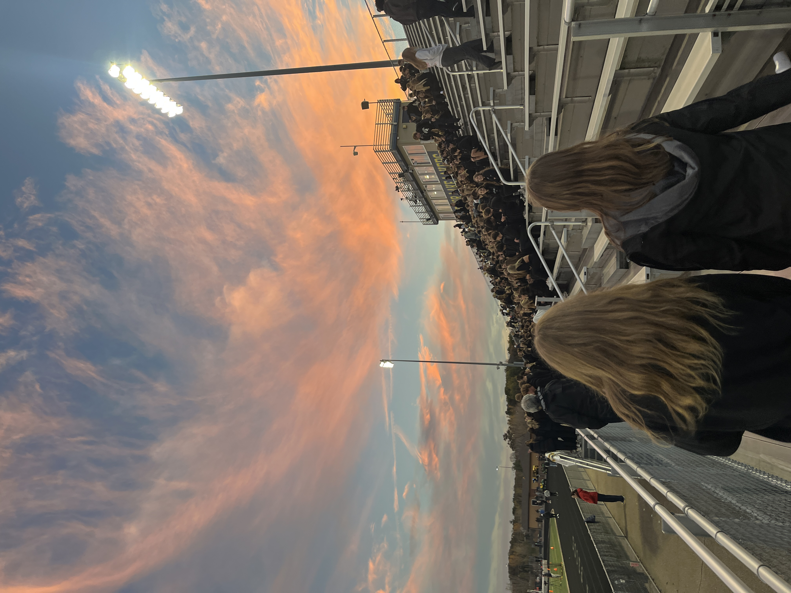

01 / Focus
Room to think
Constant interruptions can make it harder to stay with one thought. Protecting moments of focus gives ideas room to develop.
Our attention shapes the way we experience the world. Let's make room for deeper focus, real connection, creativity, and the moments happening right in front of us.

Technology can be useful, inspiring, and connecting. But when every spare moment gets filled, we can lose the space that helps us think, create, and connect with intention.
Constant interruptions can make it harder to stay with one thought. Protecting moments of focus gives ideas room to develop.
Boredom isn't always something to fix. Quiet moments can become the starting point for curiosity, reflection, and original ideas.
Being present is a way of showing care. Small choices, like putting a phone away during a conversation, can matter.
“The goal isn’t to reject technology. It’s to remember that our lives are bigger than our screens.”
The Attention Project
This isn't a detox or a competition. Try one small experiment each day. Keep what feels meaningful, and leave what doesn't.
The next time you pick up your phone automatically, pause and ask: what was I looking for?
Spend 15 minutes without digital entertainment. Let your mind wander without rushing to fill the silence.
Draw, write, cook, build, or play something before looking for inspiration online.
Have a conversation or share a meal with your phone out of reach.
Choose a small phone-free window after waking up. Let the day begin with you, not a feed.
Do one thing without documenting or posting it. Notice what it feels like to keep a moment for yourself.
Look back at the week. Pick one small change you want to carry into everyday life.

/photo-1499209974431-9dddcece7f88?auto=format&fit=crop&w=1000&q=85" alt="A peaceful sunlit room with a journal and plants">I'm Katarina, a student interested in the way technology shapes how we think, connect, and spend our time.
I started The Attention Project because I kept wondering what happens when the things designed to hold our attention begin to take up the space where our own thoughts, creativity, and relationships could be.
This isn't about blaming people for using their phones or pretending technology is all bad. It's about asking better questions, learning from research, and making more intentional choices about where our attention goes.
I hope this project gives people a place to start those conversations, experiment with small changes, and remember that being present is something worth practicing.
You don't have to change everything. Start by noticing one moment, making one choice, and seeing what opens up.
START THE 7-DAY RESET